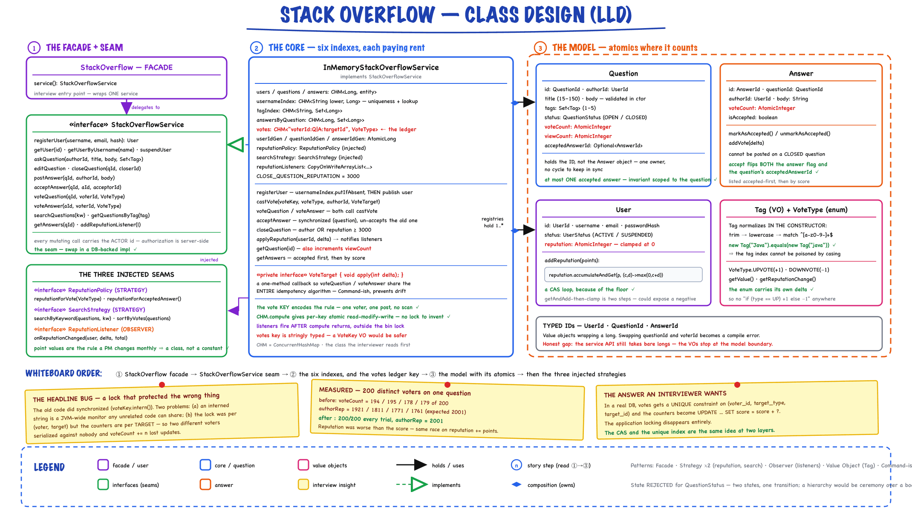
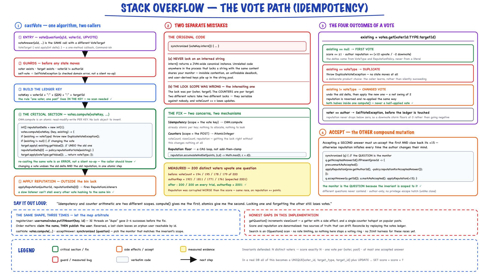

Stack Overflow Q&A // LLD
Interview-ready Q&A platform: users, questions, answers, voting with idempotency, reputation policy, tag index, keyword search, and answer acceptance. 26 Java files with a 6-scenario demo.
01 — Requirements
Functional
- User management — register with unique username, suspend users, track reputation
- Questions — ask with title/body/tags, edit by author, close (no new answers), view count on read
- Answers — post on open questions, list sorted by accepted-first then vote score
- Voting — upvote/downvote questions and answers; block self-votes and duplicate votes; allow vote switching
- Acceptance — question author accepts one answer; switching acceptance reverses prior rep bonus
- Discovery — keyword search in title/body, browse by tag, sort by vote score
Non-Functional
- Concurrency — ConcurrentHashMap stores; synchronized per-vote-key for idempotent voting
- Extensibility — pluggable ReputationPolicy and SearchStrategy
- Domain invariants — title 15–150 chars, body ≥ 30 chars, 1–5 tags enforced in Question
- Observability hooks — ReputationListener for badges, notifications, audit logs
Out of scope in this impl: comments, bounties, badges, full-text search engine, auth/session — mention as follow-ups in the interview.
02 — Core Entities

Everything on one board. The index worth pointing at is votes, keyed "voterId:Q|A:targetId" — the “one voter, one post” rule lives in the key, so idempotency needs no scan. Note the counters: voteCount, viewCount and reputation are all AtomicInteger, because their contention scope is the post, not the vote key.
| Entity | Type | Key Fields & Behavior |
|---|---|---|
| User | Aggregate Root | UserId, username, email, passwordHash, reputation, UserStatus — addReputation(), suspend() |
| Question | Aggregate Root | QuestionId, title, body, authorId, tags, voteCount, viewCount, QuestionStatus, acceptedAnswerId — validates invariants on create/edit |
| Answer | Entity | AnswerId, questionId, body, authorId, voteCount, accepted flag — applyVote(), markAsAccepted() |
| Tag | Value Object | Normalized lowercase name, equality by value |
Enums & Value Objects
| Type | Values | Notes |
|---|---|---|
| VoteType | UPVOTE (+1, +10 rep), DOWNVOTE (-1, -2 rep) | getValue() for score delta, getReputationChange() for author rep |
| QuestionStatus | OPEN, CLOSED | Closed questions reject new answers |
| UserStatus | ACTIVE, SUSPENDED | Suspended users cannot ask or answer |
| *Id | UserId, QuestionId, AnswerId | Typed long wrappers — avoid primitive obsession |
03 — Design Patterns
Strategy — ReputationPolicy
StackOverflowReputationPolicy maps votes to rep (+10/-2) and +15 for accepted answer. Swap for gamification experiments without touching vote logic.
Strategy — SearchStrategy
VoteScoreSearchStrategy filters by keyword (case-insensitive title/body) and sorts by vote count. Replace with Elasticsearch adapter at scale.
Observer — ReputationListener
LoggingReputationListener fires on every rep change. Hook for badge awards, email digests, analytics pipelines.
Facade + Repository
StackOverflow facade wraps StackOverflowService. In-memory ConcurrentHashMap indexes act as repositories.
classDiagram
class StackOverflow {
+service() StackOverflowService
}
class StackOverflowService {
<>
+registerUser()
+askQuestion()
+postAnswer()
+voteQuestion()
+voteAnswer()
+acceptAnswer()
+searchQuestions()
}
class InMemoryStackOverflowService {
-users Map
-questions Map
-answers Map
-votes Map
-tagIndex Map
+castVote()
}
class ReputationPolicy {
<>
+reputationForVote()
+reputationForAcceptedAnswer()
}
class SearchStrategy {
<>
+searchByKeyword()
+sortByVotes()
}
class ReputationListener {
<>
+onReputationChanged()
}
class Question {
+applyVote()
+acceptAnswer()
+close()
}
StackOverflow --> StackOverflowService
StackOverflowService <|.. InMemoryStackOverflowService
InMemoryStackOverflowService --> ReputationPolicy
InMemoryStackOverflowService --> SearchStrategy
InMemoryStackOverflowService --> ReputationListener
InMemoryStackOverflowService --> Question
ReputationPolicy <|.. StackOverflowReputationPolicy
SearchStrategy <|.. VoteScoreSearchStrategy
ReputationListener <|.. LoggingReputationListener
04 — Question Lifecycle
stateDiagram-v2
[*] --> OPEN: askQuestion()
OPEN --> OPEN: editQuestion() / vote / acceptAnswer()
OPEN --> CLOSED: closeQuestion()
CLOSED --> [*]
note right of OPEN: New answers allowed
note right of CLOSED: postAnswer() rejected
Domain Invariants (Question aggregate)
- Title: 15–150 characters after trim
- Body: minimum 30 characters
- Tags: 1–5 required; indexed lowercase in service layer
- Only author can edit; cannot edit when CLOSED
- Only question author can accept; acceptance blocked on CLOSED questions
05 — Voting & Reputation

Why votes.compute(voteKey, ...) and not a lock: ConcurrentHashMap.compute already gives atomic read-modify-write per key, which is exactly the idempotency scope. The old code locked on voteKey.intern() — a JVM-wide monitor, and scoped per (voter, target) while the counters are per target. 200 distinct voters produced scores of 178–195 out of 200 before the fix.
Three rules interviewers probe: no self-votes, no duplicate same-direction votes, vote switching must reverse old rep before applying new.
Vote Key & Idempotency
// Composite key: voterId + targetType + targetId String voteKey = voterId + ":Q:" + questionId; synchronized (voteKey.intern()) { VoteType existing = votes.get(voteKey); if (existing == voteType) throw new DuplicateVoteException(); if (existing != null) { target.apply(-existing.getValue()); applyReputation(authorId, -policy.reputationForVote(existing)); } target.apply(voteType.getValue()); votes.put(voteKey, voteType); applyReputation(authorId, policy.reputationForVote(voteType)); }
Accept Answer (with rep reversal)
synchronized (question) { question.getAcceptedAnswerId().ifPresent(prevId -> { prev.unmarkAsAccepted(); applyReputation(prevAuthor, -15); }); question.acceptAnswer(answerId); answer.markAsAccepted(); applyReputation(answerAuthor, +15); }
06 — Key Algorithms
Answer listing sort
Accepted answer first, then descending vote count — O(n log n) over answers for one question.
Tag browse
tagIndex maps tag name → Set<questionId>. Lookup O(1), then hydrate and sort by votes via SearchStrategy.
Keyword search
Linear scan of in-memory questions filtering title/body contains keyword (case-insensitive). At production scale: inverted index or Elasticsearch with BM25 ranking.
07 — Thread Safety
| Structure | Concurrency choice | Why |
|---|---|---|
| users, questions, answers | ConcurrentHashMap | Lock-free reads; safe concurrent registration and posting |
| votes | ConcurrentHashMap + synchronized(voteKey.intern()) | Per-voter-per-target mutex; prevents double-vote race |
| reputationListeners | CopyOnWriteArrayList | Safe iteration while notifying; rare writes |
| acceptAnswer | synchronized(question) | Atomic swap of accepted answer + rep adjustment |
| User.addReputation | synchronized method | Consistent rep reads under concurrent votes |
Production note: String.intern() is fine for interview code; at scale use a dedicated lock map (Guava Striped) or DB unique constraint on (voter_id, target_type, target_id).
08 — Service API
| Method | Behavior | Key exceptions |
|---|---|---|
| registerUser | Unique username (case-insensitive index) | IllegalArgumentException if taken |
| askQuestion | Create + index tags | Validation errors, suspended user |
| postAnswer | Answer open question | QuestionNotFound, closed question |
| voteQuestion/Answer | Cast or switch vote | SelfVoteException, DuplicateVoteException |
| acceptAnswer | Author marks best answer | IllegalStateException if not author |
| searchQuestions | Keyword filter + vote sort | — |
| getQuestionsByTag | Tag index lookup | Empty list if unknown tag |
| closeQuestion | Status → CLOSED | QuestionNotFoundException |
09 — Happy Path Flow
10 — Data Structures
| Index | Key | Value | Ops |
|---|---|---|---|
| users | userId (long) | User | O(1) get/put |
| usernameIndex | username (lower) | userId | O(1) uniqueness check |
| questions | questionId | Question | O(1) get/put |
| answers | answerId | Answer | O(1) get/put |
| tagIndex | tag name (lower) | Set<questionId> | O(1) tag browse |
| votes | voter:type:targetId | VoteType | O(1) idempotency lookup |
11 — Reputation Rules
| Event | Author receives |
|---|---|
| Upvote on your question or answer | +10 |
| Downvote on your question or answer | -2 |
| Your answer is accepted | +15 |
| Acceptance revoked (switch accept) | -15 on old answer |
| Vote switched UP → DOWN | -10 then -2 (net -12 from original upvote state) |
12 — Interview Q&A
How do you prevent a user from voting twice?
voterId:targetType:targetId. Before applying, check if the same VoteType exists (DuplicateVoteException). Use synchronized block on the key to prevent TOCTOU races between two concurrent requests from the same voter.What happens when a user switches from upvote to downvote?
Why Strategy for reputation instead of hardcoding?
How would you scale search beyond in-memory scan?
How do you model comments and bounties?
What DB schema would back this?
How do you handle hot questions with millions of views?
Why Observer for reputation?
Can a suspended user still vote?
How is this different from Reddit LLD?
What about eventual consistency for rep?
How do you test voting edge cases?
13 — Package Structure
stackoverflow/
model/ User, Question, Answer, Tag, VoteType, *Id, statuses
service/ StackOverflowService, ReputationPolicy, SearchStrategy, ReputationListener
service/impl/ InMemoryStackOverflowService, StackOverflowReputationPolicy,
VoteScoreSearchStrategy, LoggingReputationListener
exception/ StackOverflowException hierarchy
StackOverflow.java Facade
StackOverflowDemo.java 6 scenarios
Run demo:
mvn -q compile exec:java \ -Dexec.mainClass="com.you.lld.problems.stackoverflow.StackOverflowDemo"
14 — Patterns Summary
| Pattern | Where | Interview line |
|---|---|---|
| Aggregate Root | Question, User | "Invariants live in the domain object, not scattered in service if-statements" |
| Value Object | Tag, *Id | "Typed IDs prevent swapping questionId for answerId at compile time" |
| Strategy | ReputationPolicy, SearchStrategy | "Swap ranking and gamification without touching core vote path" |
| Observer | ReputationListener | "Decouple side effects — badges, notifications — from vote transaction" |
| Facade | StackOverflow | "Single entry point the interviewer runs in main()" |
| Repository (in-memory) | ConcurrentHashMap indexes | "Same interface you'd swap for JPA/Redis later" |